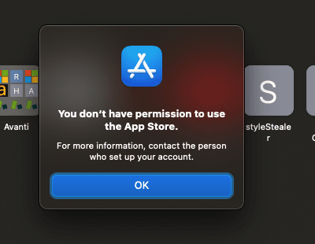

I’ve been given a new laptop from my companies’ IT department, and was all excited to get my environment all set up, but IT has locked down iCloud access as well as App Store access.
I do have a Drafts Pro subscription, and downloaded the beta build onto the new Mac, but there seems to be no successful way that I can find to “prove” it to Drafts that I have a subscription, probably because of lack of iCloud access.
Two questions:
- Is there a way to get this installed and working?
- Without iCloud, is there any way to sync my drafts, or will this be a standalone instance, separate from my personal Drafts?
Drafts is only distributed via the App Store at this time. It can run independently of iCloud as a local installation without sync, but you will need at least App Store access to install a working copy and unlock your Pro features.
Are you sure the App Store is locked down? It’s pretty common for corporate IT departments to block iCloud, but I haven’t run into them blocking the App Store entirely before.
Thanks for the reply, Greg.

Sadly, it looks like they have someone who loves to go crazy with the policy tools.
I was hoping there would be a way with the beta build to confirm my pro subscription, but it looks to be using some sort of iCloud or AppStore lookup as well: Screen Shot 2021-04-22 at 11.47.53 AM.png • Droplr
My pro sub is still active on this Mac an all of my iOS devices: Screen Shot 2021-04-22 at 11.49.32 AM.png • Droplr
An off the wall idea: Perhaps the state of being Pro could flow from eg an iOS device to eg a Mac. The common factor being the Apple ID that is used to Sync.